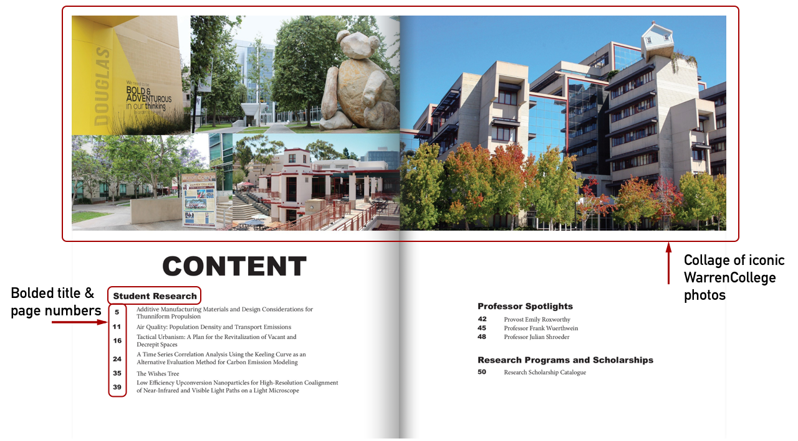
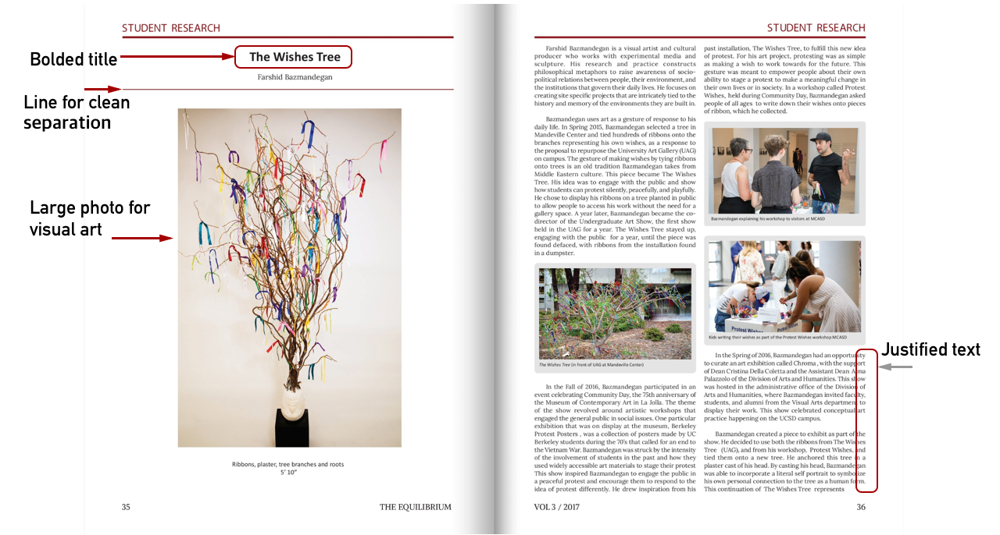
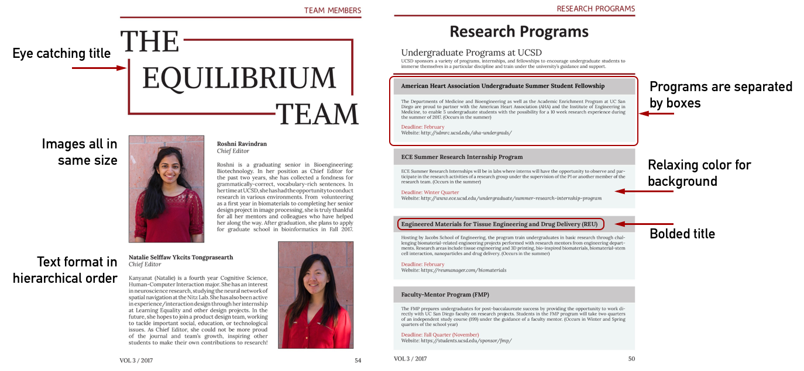

Role: Design Editor
Tool: Adobe InDesign
The Equilibrium is a relatively new interdisciplinary research journal organization established at Warren College in UC San Diego. As design editors, our goal for this issue was to create a professional and consistent journal that clearly represents and supports all types of researches.
I looked into the previous two editions and conducted the interviews with potential readers to find out the features that users liked and disliked. The questions we asked were focused on the design aspects and the user’s overall experience of journals. Some of the example responses included: “Issue 1 doesn’t have consistency like Issue 2.” “I really love the color scheme and the professor interviews.” “Some sections have a dark background that makes hard to read the context.”
From the analysis of previous journal issues and user interviews, I could learn that the major challenges are branding and inconsistencies. The previous two issues had minor inconsistencies on cover and research pages. Because the cover page is what the users look at first, it is quite important on determining the branding.
Some pages have unjustified text and others have justified text.
Based on the interview results and analysis of previous issues, I made several iterations on the layouts and pages.
1. Content page
2. Visual Arts Research page
3. Team page & Research Programs
